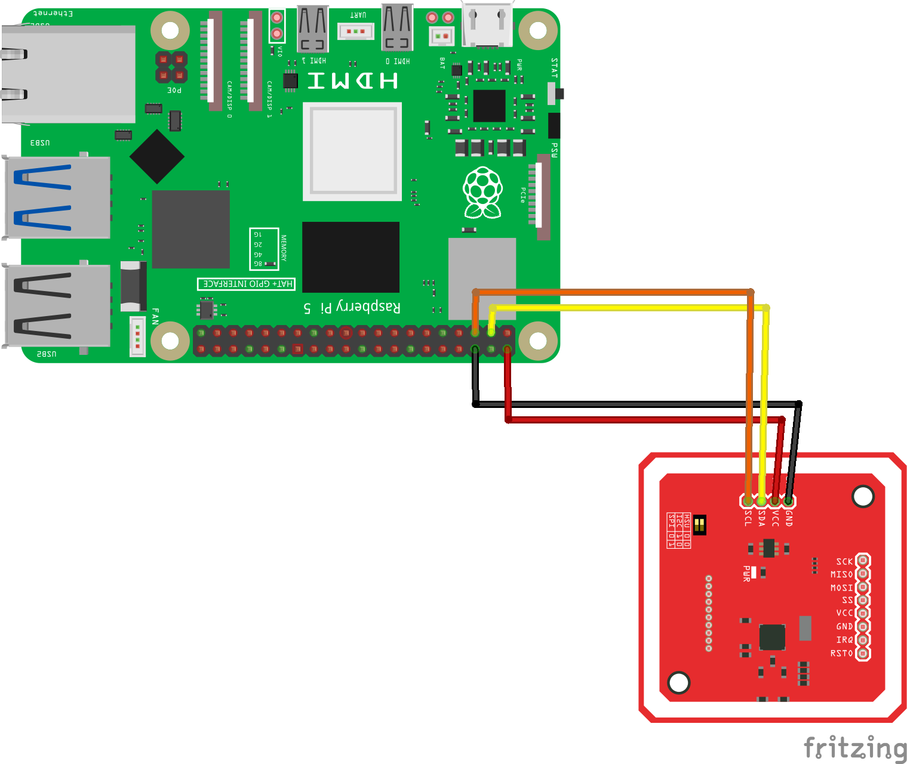

Урок: Работа с RFID/NFC считывателем PN532 на Raspberry Pi
Теоретическая часть
RFID (Radio Frequency Identification) и NFC (Near Field Communication) технологии широко используются для бесконтактной идентификации объектов. Устройство PN532 — это популярный считыватель, который поддерживает различные стандарты RFID и NFC, включая ISO 14443A/MIFARE, FeliCa и ISO 14443B.
В этом уроке мы научимся: - Подключать модуль PN532 к Raspberry Pi через I2C интерфейс - Настраивать библиотеку CircuitPython для работы с модулем - Считывать UID (уникальные идентификаторы) RFID/NFC карт и меток - Выполнять базовые операции чтения/записи с картами
Необходимые компоненты
Raspberry Pi
RFID/NFC считыватель PN532
RFID-карты или NFC-метки для тестирования
Соединительные провода
Макетная плата (опционально)
Схема подключения
{kind=link}

Модуль PN532 может работать через разные интерфейсы: I2C, SPI или UART. В этом уроке мы используем I2C как наиболее простой вариант, требующий минимального количества проводов.
Установка необходимых библиотек
Для работы с PN532 через CircuitPython, нам потребуются следующие библиотеки:
sudo apt-get update
sudo apt-get install -y python3-pip
# Включение I2C в Raspberry Pi, если ещё не включено
sudo raspi-config
# Выберите: Interfacing Options → I2C → Yes
# Установка библиотек
pip3 install adafruit-blinka
pip3 install adafruit-circuitpython-pn532
После установки желательно проверить, определяется ли I2C-устройство:
sudo i2cdetect -y 1
Вы должны увидеть устройство по адресу 0x24 (типичный адрес PN532).
Базовый код для работы с PN532
Создайте файл rfid_basic.py и вставьте следующий код:
import board
import busio
import digitalio
from adafruit_pn532.i2c import PN532_I2C
# I2C-шина и пин reset
i2c = busio.I2C(board.SCL, board.SDA)
reset = digitalio.DigitalInOut(board.D25)
pn532 = PN532_I2C(i2c, debug=False, reset=reset)
ic, ver, rev, support = pn532.firmware_version
print(f"PN532 v{ver}.{rev} — IC 0x{ic:x}")
pn532.SAM_configuration() # включаем чтение карт
print("Поднесите NFC-метку…")
while True:
uid = pn532.read_passive_target(timeout=0.5)
if uid:
print("Найдена карта, UID:", uid.hex())
Запустите скрипт командой:
python3 rfid_basic.py
Разбор кода для работы с PN532
Рассмотрим ключевые части кода и объясним их назначение:
Импорт библиотек:
import board
import busio
import digitalio
from adafruit_pn532.i2c import PN532_I2C
board - модуль для работы с GPIO пинами Raspberry Pi
busio - модуль для работы с коммуникационными интерфейсами (I2C, SPI, UART)
digitalio - модуль для работы с цифровыми входами/выходами
PN532_I2C - класс для работы с PN532 через I2C интерфейс
Инициализация I2C и пина сброса:
i2c = busio.I2C(board.SCL, board.SDA)
reset = digitalio.DigitalInOut(board.D25)
Здесь мы создаем объект для I2C интерфейса, используя стандартные пины SCL и SDA на Raspberry Pi, и настраиваем пин GPIO25 как цифровой выход для сброса модуля.
Создание объекта PN532:
pn532 = PN532_I2C(i2c, debug=False, reset=reset)
Создаем объект для работы с PN532 через I2C, передавая ему: - объект I2C интерфейса - флаг отладки (False - выключена) - пин сброса (reset)
Проверка подключения:
ic, ver, rev, support = pn532.firmware_version
print(f"PN532 v{ver}.{rev} — IC 0x{ic:x}")
Запрашиваем версию прошивки, чтобы убедиться, что модуль подключен и работает корректно. Это возвращает кортеж из четырех значений: - ic: идентификатор микросхемы - ver: основная версия прошивки - rev: ревизия прошивки - support: поддерживаемые функции
Настройка Security Access Module (SAM):
pn532.SAM_configuration()
Этот метод настраивает режим работы Security Access Module (SAM). Без явной конфигурации используются режимы по умолчанию: - Нормальный режим (без использования SAM) - IRQ пин не используется - Виртуальная карта не используется
Основной цикл считывания меток:
while True:
uid = pn532.read_passive_target(timeout=0.5)
if uid:
print("Найдена карта, UID:", uid.hex())
В бесконечном цикле мы пытаемся считать метку с таймаутом 0.5 секунды: - read_passive_target() ищет карту/метку, совместимую с ISO14443A (включая MIFARE) - Если метка найдена, метод возвращает ее UID в виде байтового массива - Метод hex() преобразует байтовый массив в шестнадцатеричную строку для удобного отображения
Расширенный пример: чтение NDEF данных с NFC-меток
NDEF (NFC Data Exchange Format) - это стандартный формат данных для NFC-меток. Давайте расширим наш код для чтения NDEF-сообщений с метки:
import board
import busio
import digitalio
from adafruit_pn532.i2c import PN532_I2C
import time
# I2C-шина и пин reset
i2c = busio.I2C(board.SCL, board.SDA)
reset = digitalio.DigitalInOut(board.D25)
pn532 = PN532_I2C(i2c, debug=False, reset=reset)
ic, ver, rev, support = pn532.firmware_version
print(f"PN532 v{ver}.{rev} — IC 0x{ic:x}")
pn532.SAM_configuration()
# Функция для чтения NDEF данных из метки
def read_ndef_data(block_number=4):
print("Поднесите NFC метку для чтения NDEF данных...")
uid = None
# Ждем метку
while uid is None:
uid = pn532.read_passive_target(timeout=0.5)
time.sleep(0.1)
print(f"Найдена метка, UID: {uid.hex().upper()}")
try:
# Пробуем прочитать блок данных (для MIFARE Classic)
# Для MIFARE Ultralight и других меток процесс может отличаться
if block_number is not None:
# Аутентификация для MIFARE Classic (ключ по умолчанию)
mifare_key = b"\xFF\xFF\xFF\xFF\xFF\xFF"
if pn532.mifare_classic_authenticate_block(uid, block_number, 0, mifare_key):
print(f"Аутентификация успешна для блока {block_number}")
block_data = pn532.mifare_classic_read_block(block_number)
if block_data:
print(f"Данные блока {block_number}: {block_data.hex().upper()}")
# Пробуем интерпретировать как ASCII текст
text = ''.join([chr(b) if 32 <= b <= 126 else '.' for b in block_data])
print(f"ASCII: {text}")
else:
print("Ошибка чтения блока")
else:
print("Ошибка аутентификации")
except Exception as e:
print(f"Ошибка при чтении данных: {e}")
# Основной код
while True:
read_ndef_data()
print("Ожидание 3 секунды перед следующей попыткой...")
time.sleep(3)
Этот код пытается прочитать содержимое блока 4 карты MIFARE Classic, который часто содержит начало NDEF сообщения. Для других типов карт и меток может потребоваться другой подход.
Пример записи данных на MIFARE Classic карту
Для записи данных на MIFARE Classic карту можно использовать следующий код:
def write_mifare_block(block_number=4, data=None):
if data is None or len(data) != 16:
data = bytearray([0x00, 0x01, 0x02, 0x03, 0x04, 0x05, 0x06, 0x07,
0x08, 0x09, 0x0A, 0x0B, 0x0C, 0x0D, 0x0E, 0x0F])
print("Поднесите MIFARE Classic карту для записи...")
uid = None
# Ждем карту
while uid is None:
uid = pn532.read_passive_target(timeout=0.5)
time.sleep(0.1)
print(f"Найдена карта, UID: {uid.hex().upper()}")
try:
# Аутентификация
mifare_key = b"\xFF\xFF\xFF\xFF\xFF\xFF" # Ключ по умолчанию
if pn532.mifare_classic_authenticate_block(uid, block_number, 0, mifare_key):
print(f"Аутентификация успешна для блока {block_number}")
# Запись данных
if pn532.mifare_classic_write_block(block_number, data):
print(f"Данные успешно записаны в блок {block_number}")
print(f"Записаны данные: {data.hex().upper()}")
else:
print("Ошибка записи данных")
else:
print("Ошибка аутентификации")
except Exception as e:
print(f"Ошибка при записи данных: {e}")
Важное замечание о безопасности: Некоторые блоки на MIFARE Classic картах содержат важную служебную информацию, включая ключи аутентификации и биты доступа. Запись в эти блоки может привести к тому, что карта станет непригодной для использования. Обычно безопасно записывать в блоки данных, начиная с блока 4.
Интеграция с системами контроля доступа
Можно создать простую систему контроля доступа, сохраняя разрешенные UID карт в файл или базу данных:
import board
import busio
import digitalio
from adafruit_pn532.i2c import PN532_I2C
import time
import json
# I2C-шина и пин reset
i2c = busio.I2C(board.SCL, board.SDA)
reset = digitalio.DigitalInOut(board.D25)
pn532 = PN532_I2C(i2c, debug=False, reset=reset)
ic, ver, rev, support = pn532.firmware_version
print(f"PN532 v{ver}.{rev} — IC 0x{ic:x}")
pn532.SAM_configuration()
# Функция для загрузки разрешенных UID из файла
def load_allowed_uids(filename="allowed_uids.json"):
try:
with open(filename, 'r') as file:
return json.load(file)
except (FileNotFoundError, json.JSONDecodeError):
# Если файл не существует или поврежден, создаем пустой список
return []
# Функция для сохранения UID в файл
def save_uid(uid, name="", filename="allowed_uids.json"):
uids = load_allowed_uids(filename)
# Проверяем, есть ли уже такой UID
for entry in uids:
if entry.get("uid") == uid:
print(f"UID {uid} уже существует в базе")
return False
# Добавляем новый UID
uids.append({"uid": uid, "name": name, "added": time.strftime("%Y-%m-%d %H:%M:%S")})
# Сохраняем обновленный список
with open(filename, 'w') as file:
json.dump(uids, file, indent=4)
print(f"UID {uid} успешно добавлен в базу")
return True
# Функция для проверки доступа
def check_access(uid):
allowed_uids = load_allowed_uids()
for entry in allowed_uids:
if entry.get("uid") == uid:
print(f"Доступ разрешен для {entry.get('name', 'Неизвестный')}")
return True
print("Доступ запрещен: неизвестная карта")
return False
# Режим регистрации новых карт
def registration_mode():
print("=== РЕЖИМ РЕГИСТРАЦИИ ===")
print("Поднесите карту для регистрации...")
uid = None
while uid is None:
uid = pn532.read_passive_target(timeout=0.5)
time.sleep(0.1)
uid_hex = uid.hex().upper()
print(f"Найдена карта, UID: {uid_hex}")
name = input("Введите имя пользователя (или оставьте пустым): ")
if save_uid(uid_hex, name):
print("Карта успешно зарегистрирована!")
else:
print("Ошибка при регистрации карты.")
# Режим проверки доступа
def access_control_mode():
print("=== РЕЖИМ КОНТРОЛЯ ДОСТУПА ===")
print("Поднесите карту для проверки...")
try:
while True:
uid = pn532.read_passive_target(timeout=0.5)
if uid:
uid_hex = uid.hex().upper()
print(f"Найдена карта, UID: {uid_hex}")
if check_access(uid_hex):
# Здесь можно добавить код для открытия двери, включения LED и т.д.
pass
time.sleep(2) # Пауза между считываниями
time.sleep(0.1)
except KeyboardInterrupt:
print("\nРежим контроля доступа завершен.")
# Главное меню
while True:
print("\n=== МЕНЮ ===")
print("1. Режим регистрации карт")
print("2. Режим контроля доступа")
print("3. Выход")
choice = input("Выберите опцию (1-3): ")
if choice == "1":
registration_mode()
elif choice == "2":
access_control_mode()
elif choice == "3":
print("Программа завершена.")
break
else:
print("Неверный выбор. Попробуйте снова.")
Этот скрипт предоставляет простое меню для регистрации новых карт и проверки доступа. Разрешенные UID сохраняются в JSON-файле вместе с именами пользователей и датой регистрации.
Практические рекомендации
Расстояние чтения: Модуль PN532 имеет относительно небольшой диапазон чтения (обычно до 5 см). Для оптимальных результатов держите карту или метку близко к антенне.
Избегайте металлических поверхностей: Металл может значительно снизить эффективность считывания. Старайтесь не размещать модуль на металлических поверхностях или вблизи них.
Проверка наличия карты: В режиме чтения могут быть ложные срабатывания, поэтому всегда проверяйте UID карты перед выполнением важных действий:
uid = pn532.read_passive_target(timeout=0.5) if uid: # Работаем с картой pass
Обработка ошибок: Всегда добавляйте обработку исключений, особенно при работе с картами MIFARE, где может быть множество типов ошибок:
try: # Код работы с картой except Exception as e: print(f"Ошибка: {e}")
Безопасность ключей: Если вы меняете ключи аутентификации на картах MIFARE Classic, всегда сохраняйте резервную копию ключей. Потеря ключей может сделать карту непригодной для использования.
Заключение
В этом уроке мы изучили основы работы с RFID/NFC считывателем PN532 на Raspberry Pi через I2C интерфейс. Мы рассмотрели:
Базовое подключение и инициализацию считывателя
Считывание UID карт и меток
Чтение и запись данных на MIFARE Classic карты
Создание простой системы контроля доступа
Теперь вы можете использовать эти знания для создания собственных проектов с использованием RFID/NFC технологий, таких как: - Системы контроля доступа - Электронные платежные системы - Учет посещаемости - Интерактивные экспонаты и игры
Дополнительные материалы
[Документация CircuitPython для PN532](https://circuitpython.readthedocs.io/projects/pn532/en/latest/)
[Спецификация стандарта NDEF](https://developer.android.com/develop/connectivity/nfc/nfc/advanced-nfc.html)
[Руководство по работе с MIFARE Classic](https://www.nxp.com/docs/en/data-sheet/MF1S50YYX_V1.pdf)